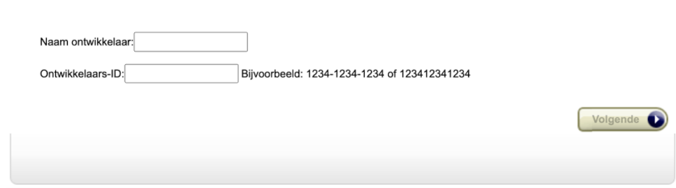
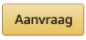
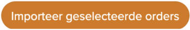

Inleiding
Creëer snel verzendetiketten van jouw Amazon-orders en download deze vervolgens allemaal tegelijk vanuit het MyParcel-platform.
1. Installatie
1.1 Nieuwe installatie
In de koppeling tussen Amazon en MyParcel zijn de SellerID en MWS Authorization van jouw Amazon-account nodig. Om deze te verkrijgen,
log je in via https://sellercentral.amazon.nl/.
In het dashboard kun je bovenaan de pagina verschillende verkooplanden selecteren.
Selecteer hier bijvoorbeeld Amazon.de (Spanje, Italie, Verenigde Koninkrijk en Frankrijk worden ook geaccepteerd).
Ga vervolgens naar 'Appstore' > 'Je apps beheren' > 'Nieuwe ontwikkelaar autoriseren' en vul MyParcel in bij
'Ontwikkelaar naam' en 777787439427 bij 'Ontwikkelaar ID'.

Na het accepteren van de voorwaarden, worden de 'SellerID' en 'MWS authorization' getoond.
Kopieer de codes en vul deze in een de gelijknamige velden van de Amazon-integratie.
Deze zijn in het MyParcel systeem te vinden via  >
Accountinstellingen > Integratie > Externe koppelingen > Amazon.
>
Accountinstellingen > Integratie > Externe koppelingen > Amazon.
1.2 Updaten bestaande installatie
Wanneer er een nieuwe versie van de Amazon-koppeling live wordt gezet, hoef je je als gebruiker geen zorgen te maken over het installeren van een nieuwe versie. Deze wordt automatisch geüpdatet, waardoor je altijd de meest recente versie gebruikt.
2. Gebruik koppeling
2.1 Een orderbestand maken in Amazon
Om Amazon orders te importeren moet je een bestellingsoverzicht downloaden vanuit Amazon Seller Central. Ga hiervoor naar Bestellingen > Besteloverzichten > Niet-verzonden bestellingen. Bij overzichten aanvragen klik je op . Het kan maximaal een kwartier duren voordat in de tabel ‘Overzicht downloaden’ het laatste besteloverzicht te zien is, vaak gaat dit sneller. Door op vernieuwen te drukken kun je zien of het nieuwste besteloverzicht inmiddels beschikbaar is. Download het nieuwste bestand in het overzicht.
2.2 Importeren van orders
Om je orders van Amazon te importeren, klik je in het zendingenoverzicht op en dan
op Upload Amazon orders. Selecteer je meest recente Amazon besteloverzicht. De orders zullen ingeladen worden.
Nadat je op  hebt geklikt zullen de orders als concepten in je zendingenoverzicht komen te staan.
Je zendingen worden geïmporteerd als standaardzending. Welk pakkettype een standaardzending heeft, kun je instellen in je backoffice bij > Accountinstellingen >
Zendingen.
2.3 Veelgestelde vragen over het gebruik van de plugin
Worden de barcodes teruggekoppeld naar Amazon?
Ja, de barcodes zullen teruggekoppeld worden aan Amazon en de bestelling zal de status verzonden krijgen zodra het label geprint is.
Kan ik ook een ander besteloverzicht gebruiken om Amazon orders te importeren?
Nee, je moet het besteloverzicht ‘Niet-verzonden bestellingen’ van Amazon gebruiken. Andere bestanden kunnen niet gebruikt worden.